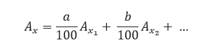

Definiție: Atomul este cea mai mică parte a materiei care nu se mai poate divide prin metode chimice obișnuite.
Atomul este format din:
Nucleonii sunt particulele nucleului (neutronii și protonii)
Protonii, neutronii si electronii sunt particule funcamentale ale atomului
| Particule | Sarcina relativă | Sarcina reală | Masa relativă | Masa reală |
|---|---|---|---|---|
| proton | +1 | -1,6x10-19C | 1 | 1,67x10-27kg |
| neutron | 0 | 0 | 1 | 1,67x10-27kg |
| electron | -1 | 1,6x10-19C | 0 | 9,1x10-31kg |
Numărul protonilor din nucleu este egal cu numărul electronilor din învelișul de electroni
Atomul este neutru din punct de vedere electric.
Numărul protonilor din nucleu se notează cu Z și se numește NUMĂR ATOMIC.
Numărul neutronilor din nucleu se notează cu N sau n
Suma dintre numărul protonilor și numărul neutronilor din nucleu se notează cu A și se numește NUMĂR DE MASĂ
- sunt toți atomii care au același număr atomic Z;
Definiția elementului oxigen (O): sunt toți atomii care au opt protoni în nucleu;
Definiția elementului aluminiu (Al): sunt toți atomii care au 13 protoni în nucleu;
Definiția elementului calciu (Ca): sunt toți atomi care au 20 de protoni în nucleu
- izotopii sunt specii de atomi care au același număr atomic Z, dar număr de masă A, diferit.
Masa atomică a unui element se calculează în funcție de masa și proporția izotopilor.
Unde:
Hidrogenul are trei izotopi:
NA=6,022x1023 particule/mol
Numărul lui Avogadro reprezintă numărul de particule ( ioni, atomi sau molecule) dintr-un mol de substanță.
Electronii se găsesc așezați ordonat pe straturi, în învelișul de electroni al atomului.
În atom pot exista maximum 7 straturi.
Straturile se diferențiază prin:
Principiul lui Pauli:într-un orbital încap maximum 2 electroni de spin opus.
Mișcarea de spin reprezintă mișcarea în jurul propriei axe.
Există patru tipuri de orbitali:
Exemplu de orbital de tip s:
| Substratul | Numărul de orbitali | Numărul maxim de electroni |
|---|---|---|
| s | 1s | 2eˉ |
| p | 3p | 6eˉ |
| d | 5d | 10eˉ |
| f | 7f | 14eˉ |
| Stratul | Numărul de substraturi |
|---|---|
| 1 | 1 |
| 2 | 2 |
| 3 | 3 |
| 4 | 4 |
| 5 | 5 |
| 6 | 6 |
Principiul lui Hund:într-un substrat, întâi se ocupă fiecare orbital cu câte un electron și după aceea se trece la completarea cu cel de-al doilea electron.
Un substrat pe jumătate ocupat cu electroni sau complet ocupat cu electroni este foarte stabil.